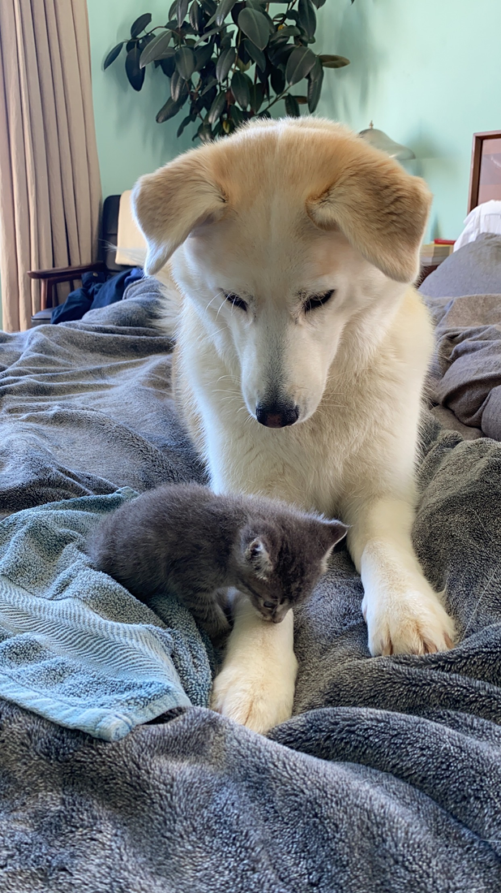
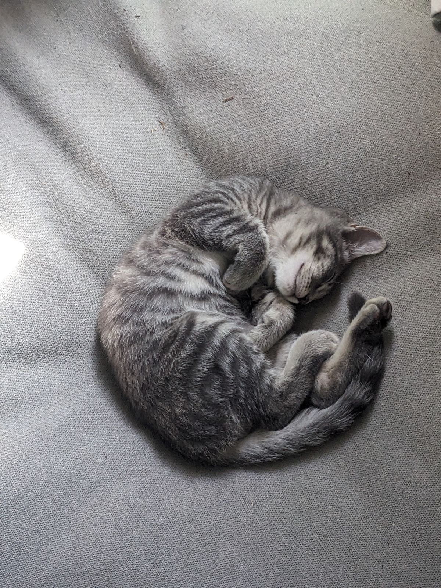
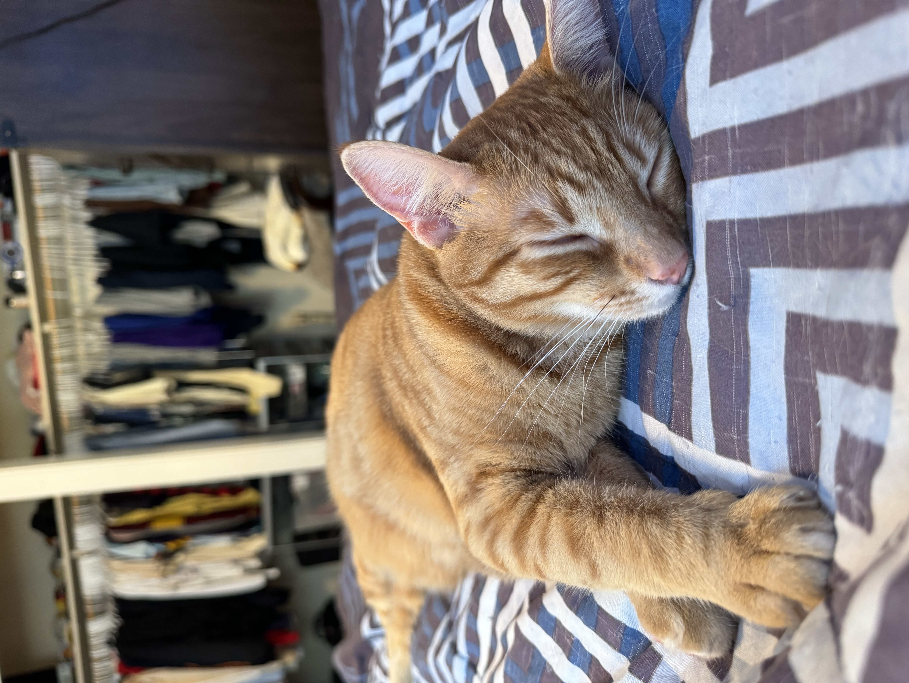
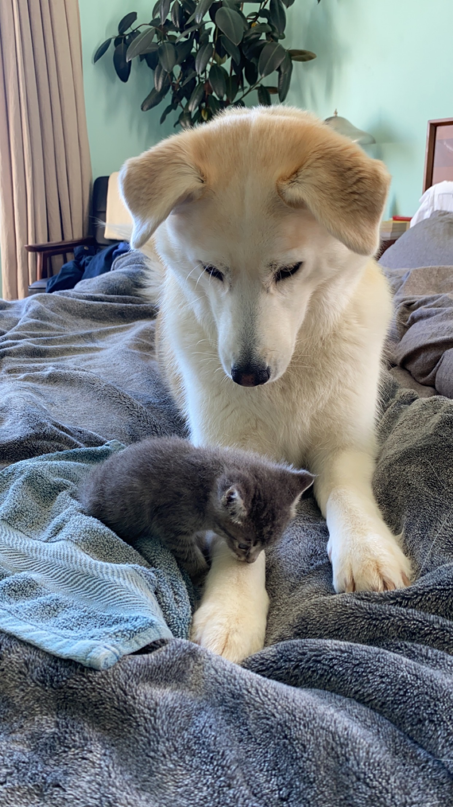
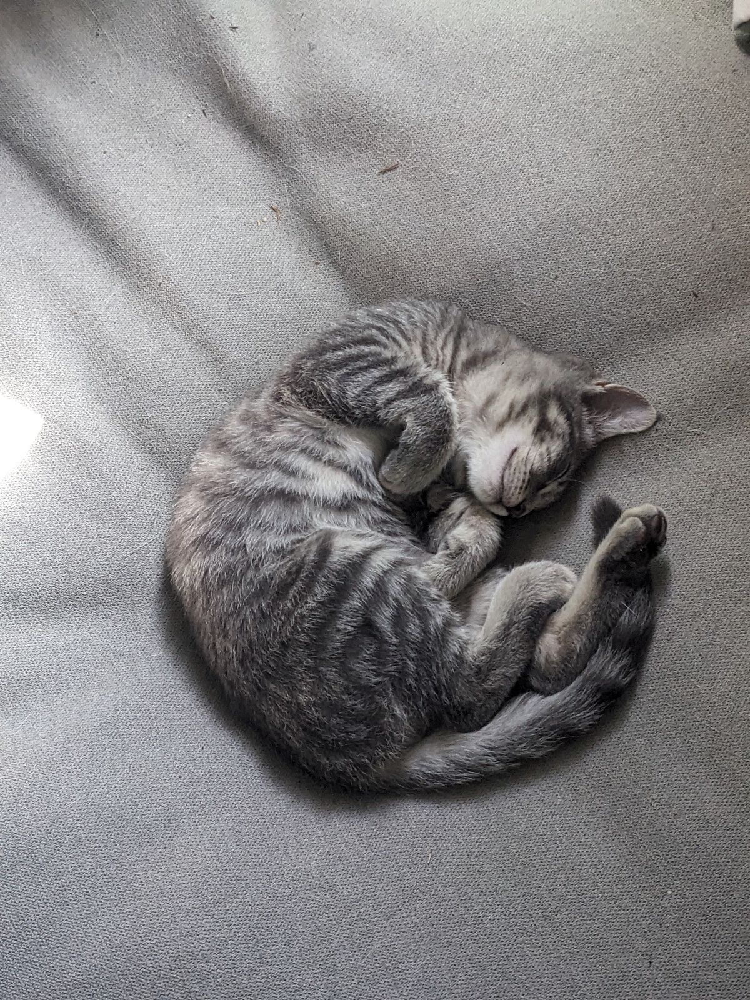
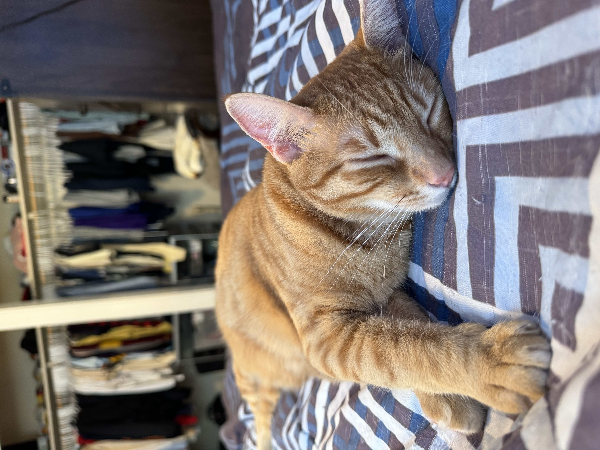
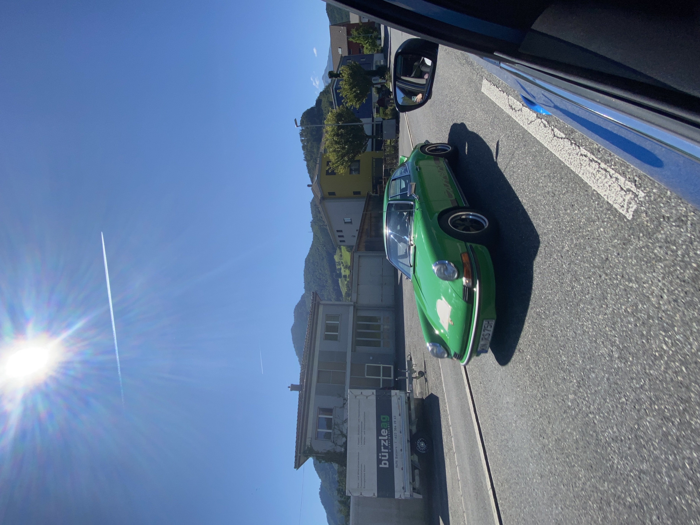
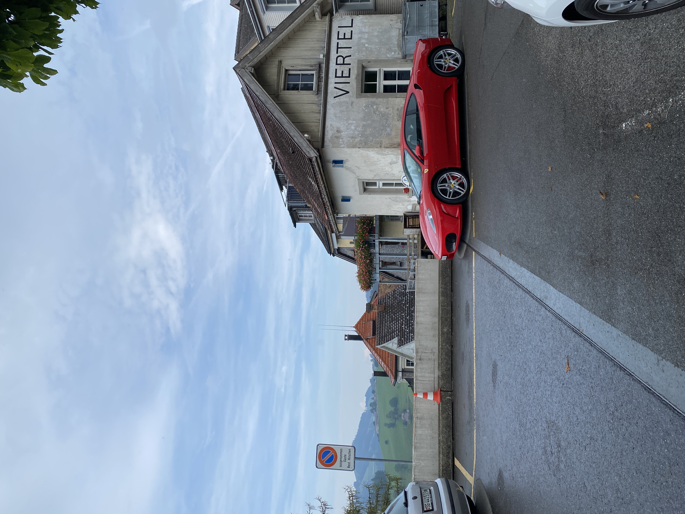
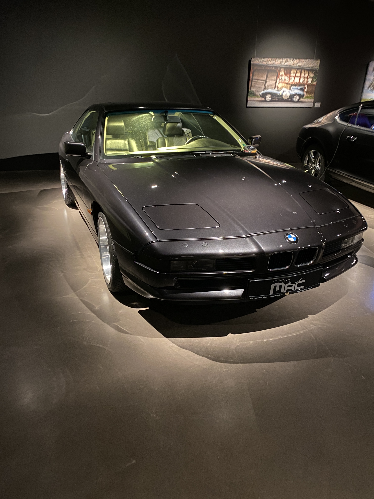

MARIE'S HOMEPAGE
WELCOME TO MY WEBSITE
My Page
My name is Marie Dippon
I am a student in CS 102 class. I love music, movies, being creative, and going out.
This is my dog Luna and my cat Zeus and my boyfriend's cat Devi
 





I have always been really into cars, and I have worked on some as well. Here are some of my favorite photos I've taken from when I visited my home back in Germany.
  This is where my campus is located
Here is a little video of my hometown in Germany